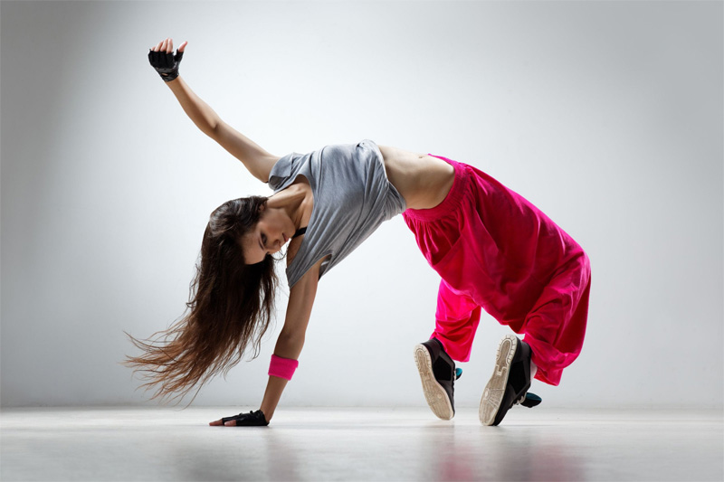
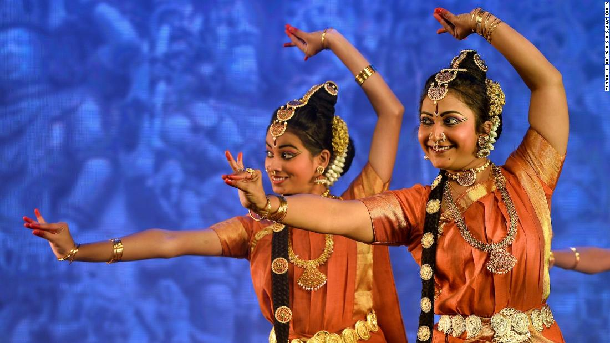
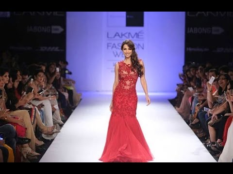

Ornate
Cultural Events ✌
Dance
💃🏻
Western -->

Many different dances are done to country-western music. These dances include: Two Step, Waltz, Cowboy or Traveling Cha Cha, Polka Ten Step (also known as Ten Step Polka), Schottische, and other Western promenade dances, East Coast Swing, West Coast Swing, and Nightclub Two Step.
Traditional -->

They are Bharatnatyam, Kathak, Kathakali, Manipuri, Kuchipudi, and Odissi. The folk dances of India are much more than mere body movements, from the very ancient times the classical dance forms of India is considered as a discipline and a way to devote yourself to God through art.
Singing

Singing is the act of creating musical sounds with the voice. A person who sings is called a singer or vocalist (in jazz and/or popular music). Singers perform music (arias, recitatives, songs, etc.) that can be sung with or without accompaniment by musical instruments.
Skits🎭

a short literary piece of a humorous or satirical character.
a short theatrical sketch or act, usually comical.
a gibe or taunt.
British Dialect. a joke or prank.
Ramp Walk🚶
a sloping floor, path, etc., that joins two surfaces at different levels. 2 a movable stairway by which passengers enter and leave an aircraft.

Standup Comedy🤡

Stand-up comedy is a comedy performance where a comedian performs in front of a live audience, often addressing them directly from the stage.
Anchoring🎤
to hold in place in the water by an anchor anchor a ship.
to secure firmly : fix anchor a post in concrete.
to act or serve as an anchor for … it is she who is anchoring the rebuilding campaign …